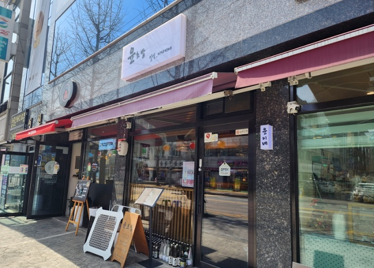

윤초밥
일동 안산대학교 근처 초밥집 맛집

내돈 내산 찐 리뷰 !
일동 안산대학교 근처 근처오면 꼭 생각나는 초밥 윤초밥 !안산대학교 근처 입니다 !
초밥을 정말 좋아해서 한번 와봤습니다.
사장님이 젊은 남자분이신데 엄청 친절하시고 일식 요리 짱잘하시는듯 ㅋㅋ
자세한 설명과 초밥만 있는게 아닌 다른 맛있는 메뉴도 많았어요.
에피타이저는 된장국, 샐러드가 나왔어요.
위에는 요거트 드레싱이 뿌려져있어요 !
앞에서 직접 만들어주셔서 초밥이 나오는 동안 구경하는 재미까지 !